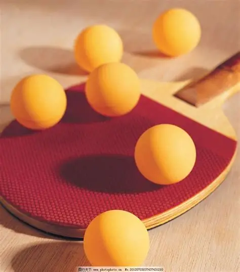

乒乓球

一、项目概述：小球转动大世界
乒乓球，又称桌球、兵乓球，是一项集技巧、速度、力量、智慧于一体的球类运动，被誉为“桌上的奥林匹克”。它起源于19世纪末的英国，最初是贵族阶层的休闲娱乐活动，经过百年发展，已成为全球普及度最高的运动之一，也是奥运会、世锦赛等国际顶级赛事的核心项目。乒乓球运动门槛低、参与性强，无论是专业竞技还是大众健身，都能看到它的身影，兼具竞技性与趣味性，是一项适合全年龄段参与的运动。 作为中国的“国球”，乒乓球在我国拥有深厚的群众基础和辉煌的竞技成就，从容国团夺得第一个世界冠军，到如今中国乒乓球队在国际赛场上长期保持领先地位，乒乓球不仅是一项运动，更成为中国体育精神的象征，承载着民族荣耀与全民热爱。
二、起源与发展：从休闲游戏到全球竞技
1. 起源（19世纪末-20世纪初）
乒乓球的起源可追溯至1890年左右的英国，当时英国贵族阶层在下午茶时间，会用书本当作球台，用雪茄盒盖当作球拍，用软木或橡胶制成的小球进行娱乐游戏，最初被称为“室内网球”“桌上网球”。由于击球时会发出“乒乓”的清脆声响，后来被正式命名为“乒乓球”（Table Tennis）。 1900年，英国制造商生产出第一批专用乒乓球器材，包括木质球拍、赛璐珞小球和标准球台，标志着乒乓球从休闲游戏向规范运动转变。1926年，国际乒乓球联合会（ITTF）在伦敦成立，制定了统一的竞赛规则，同年举办了第一届世界乒乓球锦标赛，乒乓球正式成为一项全球性的竞技运动。
2. 发展与演变
- 早期发展（1926-1950年）：主要以欧洲选手为主导，打法以削球为主，比赛节奏较慢，技术相对单一，匈牙利、奥地利等国选手长期占据世界顶尖水平。
- 亚洲崛起（1950-1980年）：日本选手率先创新直拍快攻打法，打破欧洲垄断；随后中国乒乓球队异军突起，容国团在1959年夺得第25届世锦赛男单冠军，成为中国第一个世界冠军，此后中国乒乓球队逐步建立起统治地位，形成了直拍快攻、横拍弧圈结合快攻等多种先进打法。
- 现代发展（1980年至今）：规则不断优化，包括小球改大球（2000年，直径从38mm改为40mm）、实行11分制（2001年，替代传统21分制）、无遮挡发球（2002年）等，目的是增加比赛的观赏性和公平性。同时，技术不断革新，横拍打法成为主流，弧圈球技术、反手拧拉等新技术不断涌现，全球乒乓球运动的竞争力也不断提升。
三、核心规则：易懂且严谨的竞技准则
1. 比赛结构
- 单打：分为男子单打、女子单打，采用五局三胜制（国际大赛）或三局两胜制（普通比赛），每局11分，先得11分且领先对手2分及以上者胜该局；若双方战至10平，需连赢2分才能获胜。
- 双打：分为男子双打、女子双打、混合双打，同样采用五局三胜制、每局11分，双打需交替击球，发球时需发至对方台面的对角线区域，发球顺序和接发球顺序有严格规定。
- 团体赛：由单打和双打组合而成，通常采用五场三胜制，双方各派出3名选手，通过不同场次的单打、双打组合，先赢得3场比赛者获胜（如奥运会团体赛）。
2. 合法击球与违例
- 合法击球：球需先落在己方台面，再弹至对方台面有效区域（台面边缘为有效）；击球时需用球拍的合法部位（拍面覆盖物）击球，不能用手、身体其他部位触碰球或球台。
- 常见违例：发球违例（如遮挡发球、发球时球未抛起足够高度、发球落点不符合规定）、击球违例（如球未过网、球落地后未及时击球、双打时未交替击球）、身体违例（如身体触碰球台、球拍触碰球网）。
四、器材规格：标准化配置保障公平竞技
- 标准球台为长方形，长2.74米，宽1.525米，高0.76米，台面为深色（通常为墨绿色或蓝色），表面光滑且有一定弹性。球台中间有一道高15.25厘米的球网，将球台分为两个对称的半场，球网两端固定在球台两侧的网柱上，网面需与台面垂直。
- 球拍由拍面、拍柄、拍身组成，拍面需覆盖一层胶皮（分为正胶、反胶、长胶、生胶等），胶皮表面有不同的纹理，影响击球的旋转和速度。
- 标准比赛用球为圆形，直径40mm（2000年之前为38mm），重量2.7克，材质为塑料（2014年起替代传统赛璐珞材质），颜色分为白色和橙色，需具有良好的弹性和稳定性，确保击球时的轨迹可预测。